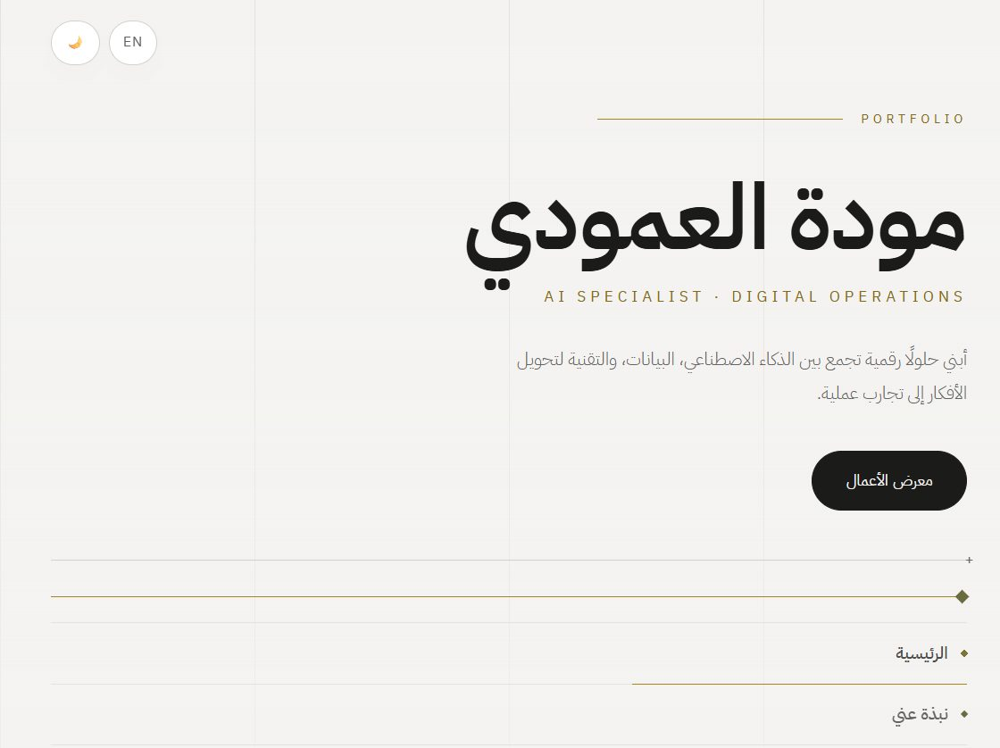
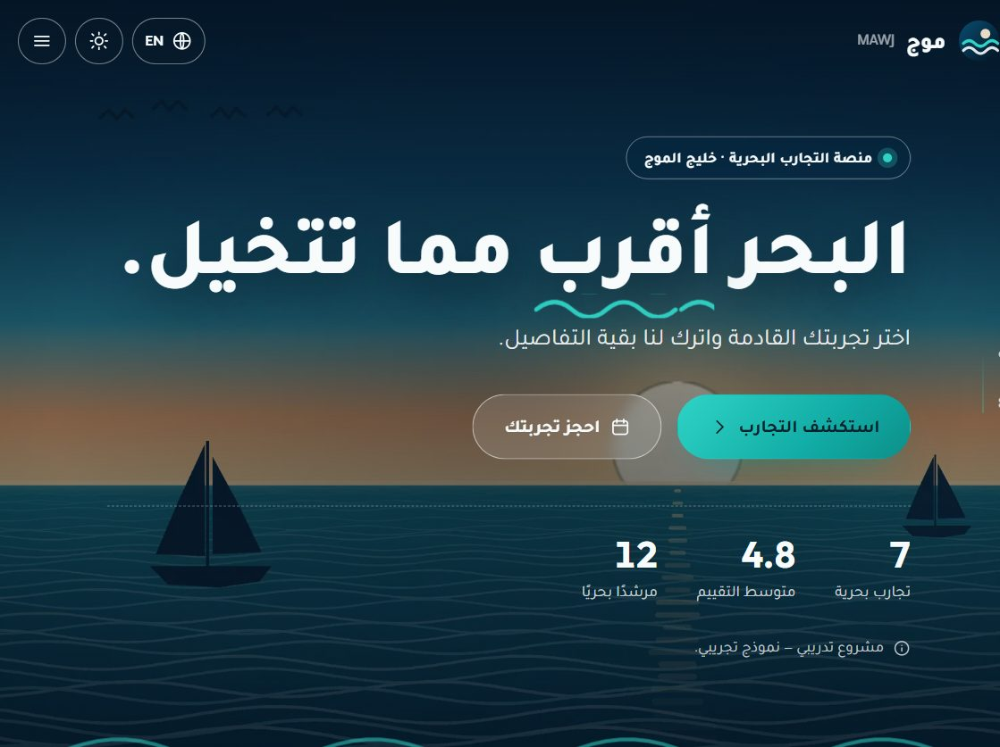
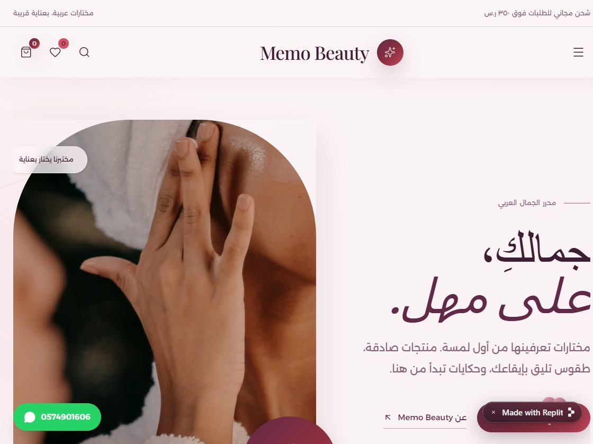
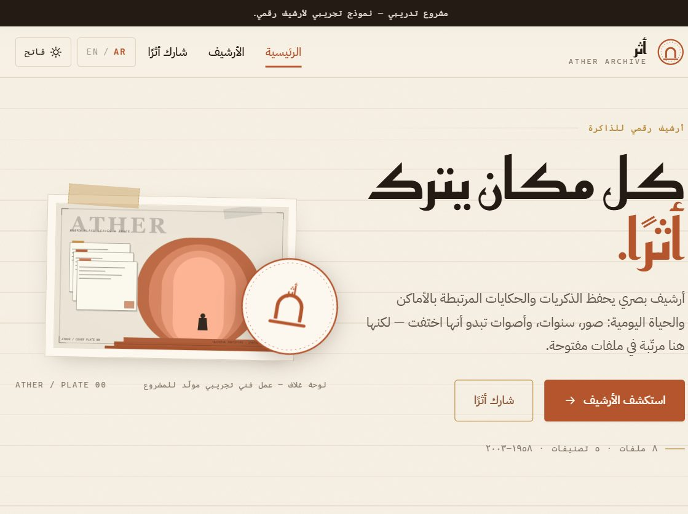
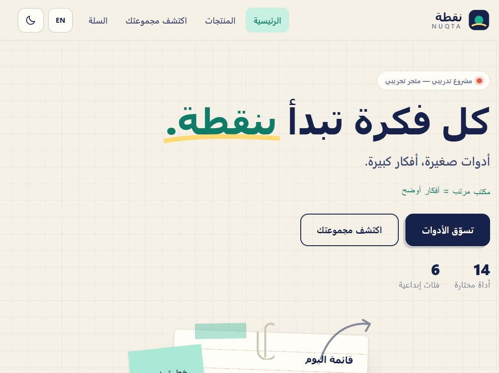
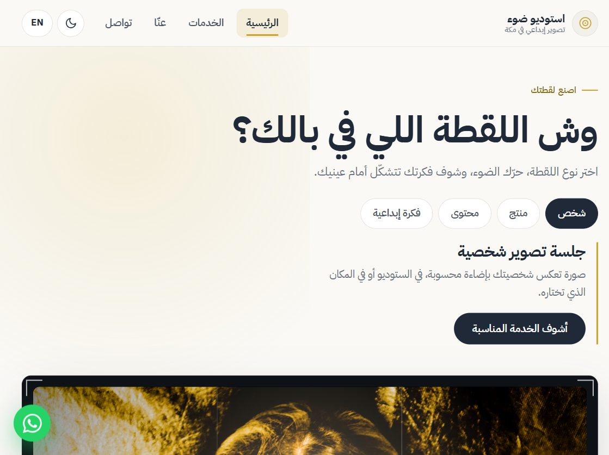
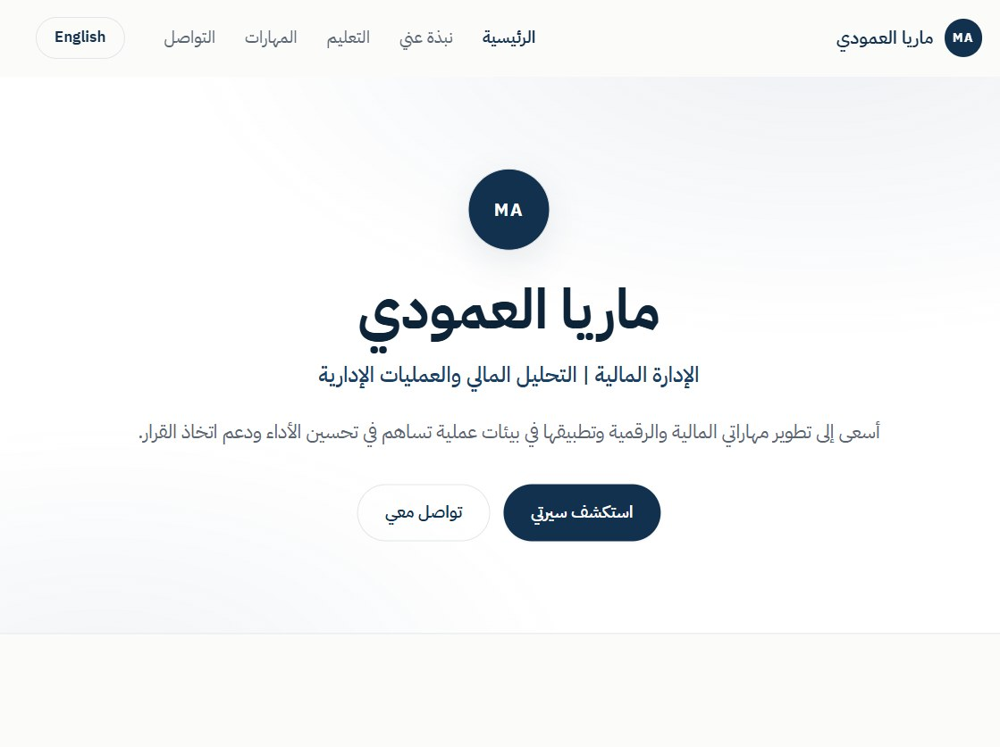
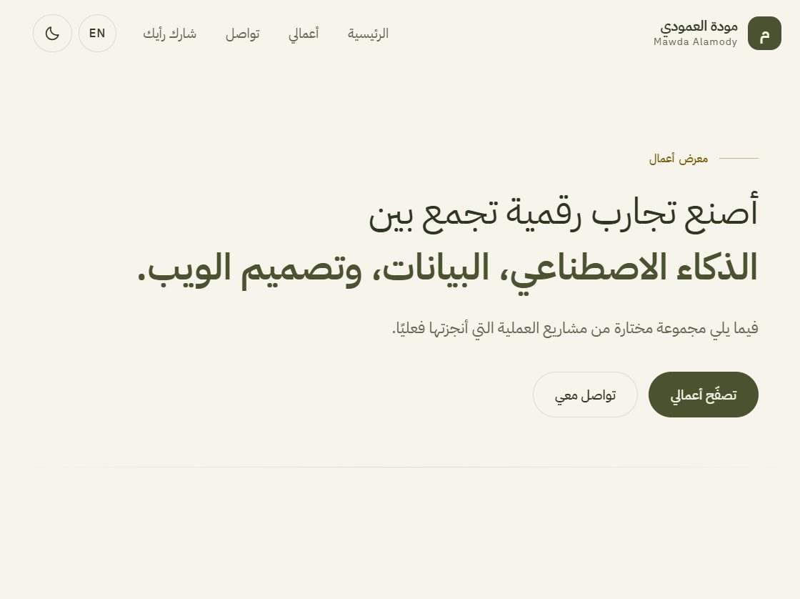

مواقعي في مادة بناء ونشر المواقع بالذكاء الاصطناعي
مودة العمودي
تجربة في بناء المواقع باستخدام الذكاء الاصطناعي
Website Showcase








عنّي
طالبة بكالوريوس ذكاء اصطناعي، مهتمة ببناء الحلول الرقمية وتوظيف الذكاء الاصطناعي في تطوير المواقع وتحسين تجربة المستخدم.
-
01
البناء باستخدام الذكاء الاصطناعي
تحويل الأفكار إلى مواقع تفاعلية قابلة للنشر.
-
02
إدارة وتطوير المشاريع
استخدام Git وGitHub لتنظيم التعديلات وحفظ إصدارات المشروع.
-
03
النشر والمراجعة
اختبار المواقع وتحسينها وتجهيزها للنشر.
سيرتي الذاتية
- الفكرة
- موقع سيرة ذاتية رقمية يقدّم نبذة عني، مهاراتي، خبراتي ومشاريعي بطريقة تفاعلية واحترافية، مع إمكانية الوصول إلى معلوماتي وروابطي بسهولة.
- المشكلة
- كان الهدف تحويل السيرة الذاتية التقليدية إلى تجربة رقمية أكثر تنظيمًا وتفاعلية، بدل الاكتفاء بملف ثابت.
- الحل والنتيجة
- تم بناء موقع شخصي متجاوب يعرض المعلومات بشكل واضح ومنظم، مع تصميم مناسب للمشاركة والتقديم المهني.
Memo Beauty
أول موقع بنيته باستخدام الذكاء الاصطناعي
- الفكرة
- متجر إلكتروني للجمال والعناية، يقدّم المنتجات بطريقة منظمة وواجهة بسيطة تسهّل على الزائر استكشاف المنتجات والتعرّف عليها.
- المشكلة
- كانت الفكرة بحاجة إلى تحويلها من تصور أولي إلى متجر إلكتروني متكامل بواجهة واضحة وتجربة استخدام مناسبة.
- الحل والنتيجة
- استخدمت أدوات الذكاء الاصطناعي للمساعدة في بناء الموقع وتطوير واجهته، وتحويل الفكرة إلى تجربة متجر إلكتروني قابلة للتصفح والنشر.
Nuqta — نقطة
متجر قرطاسية بتجربة بصرية مستوحاة من عالم الأدوات المكتبية والإبداع
- الفكرة
- متجر إلكتروني للقرطاسية، يتيح استكشاف أدوات متنوعة للدراسة والكتابة والرسم والتخطيط، ضمن تجربة تجمع بين عرض المنتجات والطابع الإبداعي.
- المشكلة
- كان التحدي تقديم متجر قرطاسية لا يكتفي بعرض المنتجات، بل يجعل تصفحها واكتشافها تجربة مرتبطة باهتمامات المستخدم.
- الحل والنتيجة
- تم بناء تجربة تجمع بين تصنيف المنتجات حسب الاستخدام، وعرضها بطريقة بصرية بسيطة ومرحة، مع توفير تفاصيل المنتج وخيارات الشراء بوضوح.
معرض أعمالي
- الفكرة
- موقع شخصي يجمع أعمالي ومشاريعي في مكان واحد، ويقدّمها بطريقة منظمة تساعد الزائر على التعرف على المشاريع واستكشافها بسهولة.
- المشكلة
- مع تعدد المشاريع والمواقع التي تم إنشاؤها، كان من المهم وجود مساحة واحدة تجمعها وتعرضها بشكل واضح ومنظم بدل أن تكون موزعة بين روابط مختلفة.
- الحل والنتيجة
- تم إنشاء معرض أعمال شخصي يعرض المشاريع مع نبذة مختصرة عن كل مشروع وروابط الوصول إليها، ضمن تجربة بسيطة ومتناسقة تعكس الهوية الشخصية.
ماذا تعلمت؟
-
01
بناء المواقع بالذكاء الاصطناعي
تحويل الأفكار والتصورات إلى مواقع فعلية باستخدام أدوات الذكاء الاصطناعي.
-
02
إدارة المشروع وتطويره
أهمية تنظيم ملفات المشروع واستخدام Git وGitHub لمتابعة التعديلات والإصدارات.
-
03
التجربة والمراجعة
بناء الموقع لا ينتهي عند النتيجة الأولى، بل يحتاج إلى اختبار ومراجعة وتحسين قبل النشر.
موقف واجهته
المشكلة
أثناء العمل على أحد المواقع، توقفت أداة ذكاء اصطناعي كنت أستخدمها وطلبت اشتراكًا مدفوعًا قبل إكمال العمل.
الحل
استبدلتها بـ OpenCode وأدوات مجانية أخرى تؤدي الغرض نفسه، وتمكنت من مواصلة العمل.